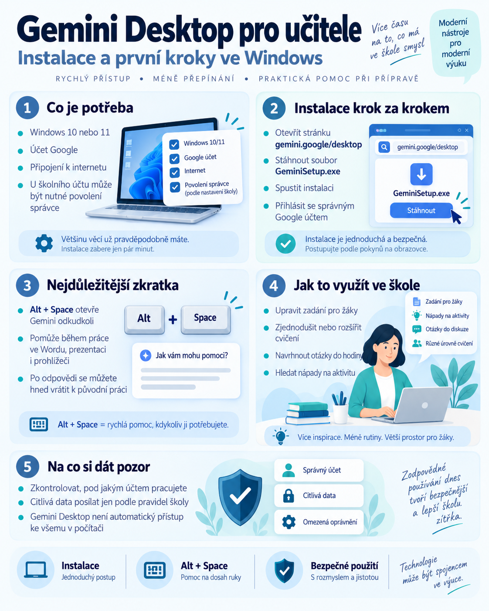

{kind=link}

Google v září 2026 uvedl samostatnou aplikaci Gemini pro Windows. Učitel tak nemusí pokaždé otevírat prohlížeč a hledat stránku Gemini. AI lze spustit přímo z počítače a pomocí zkratky Alt + Space ji vyvolat během práce.
Nejde ani tak o úplně nový typ AI jako o pohodlnější způsob přístupu k ní. Tento návod ukazuje instalaci a základní používání krok za krokem.
Co je Gemini Desktop
Gemini Desktop je samostatná aplikace Gemini pro počítače s Windows. Může pomáhat například při:
- přípravě textů a osnov;
- úpravě zadání;
- hledání nápadů do hodin;
- vysvětlování pojmů;
- tvorbě obrázků;
- práci s podporovanými Google službami.
Největší výhodou je rychlý přístup bez nutnosti opakovaně otevírat webovou stránku.
Co potřebujete
Podle oficiální dokumentace Googlu je potřeba:
- Windows 10 nebo novější;
- alespoň 8 GB RAM;
- minimálně 200 MB volného místa pro instalaci;
- stabilní připojení k internetu;
- osobní nebo podporovaný pracovní či školní účet Google.
U školního účtu musí být přístup ke Gemini povolen administrátorem. Desktopová aplikace není offline AI.
Instalace krok za krokem
Krok 1: Otevřete stránku pro stažení
Na počítači otevřete oficiální stránku gemini.google/desktop.
Krok 2: Stáhněte instalační soubor
Klikněte na možnost stažení aplikace pro Windows. Uložte soubor GeminiSetup.exe. Obvykle jej najdete ve složce Stažené soubory.
Krok 3: Spusťte instalaci
Otevřete GeminiSetup.exe a pokračujte podle pokynů na obrazovce.
Krok 4: Otevřete aplikaci
V nabídce Start vyhledejte Gemini a spusťte jej.
Krok 5: Přihlaste se správným účtem
Při prvním spuštění se přihlaste účtem Google. Pokud používáte osobní a školní účet, věnujte výběru účtu zvláštní pozornost. Funkce, oprávnění a podmínky práce s daty se mohou lišit podle účtu a licence.
Nejdůležitější zkratka: Alt + Space
Pro rychlé otevření Gemini použijte:
Gemini se otevře nad aktuální prací. Příklad:
Stejně lze aplikaci využít při práci s prezentací nebo prohlížečem. Zkratka je důležitá právě proto, že zkracuje vzdálenost mezi běžnou prací a AI.
Gemini automaticky nevidí všechno v počítači
To, že se aplikace otevře nad jiným programem, neznamená, že automaticky získává obsah všech otevřených souborů a aplikací. Chcete-li pracovat s konkrétním podkladem, musíte jej Gemini odpovídajícím způsobem zpřístupnit nebo využít podporované propojení.
Neprezentujte desktopovou aplikaci jako nástroj s automatickým neomezeným přístupem k počítači.
Pět praktických použití pro učitele
1. Úprava zadání
2. Diferenciace
3. Kontrolní otázky
4. Rychlá aktivita do hodiny
5. Přeformulování textu
Ve všech případech je učitel odpovědný za výběr a kontrolu výsledku.
Gemini Desktop a Google Workspace
Podle dostupnosti konkrétního účtu může Gemini využívat podporované Google aplikace, například Gmail nebo Drive. Možný pracovní postup:
Dostupnost funkcí však závisí na účtu, licenci, oprávněních a nastavení správce.
Školní účet a bezpečnost
Při práci vždy kontrolujte:
- pod jakým účtem jste přihlášeni;
- zda je služba povolená školou;
- ke kterým datům má přístup;
- zda je konkrétní dokument vhodné AI poskytnout.
Bez ověření podmínek školy neposílejte do experimentálních AI nástrojů osobní ani citlivé údaje žáků.
Gemini Desktop versus Gemini v prohlížeči
Desktopová aplikace je užitečná zejména při častém průběžném používání během práce. Webová verze je stále vhodná pro delší samostatnou práci a použití bez instalace.
Není potřeba jednu z variant prohlašovat za univerzálně lepší. Obě řeší trochu jiný pracovní scénář.
První experiment
- otevřete pracovní dokument;
- stiskněte Alt + Space;
- požádejte o tři varianty jednoho zadání;
- vyberte nejlepší;
- vraťte se k dokumentu;
- zhodnoťte, zda vám nový postup skutečně ušetřil čas.
Závěr
Gemini Desktop je zajímavý především tím, že přibližuje AI každodenní práci učitele.
Právě podobné malé změny často rozhodují o tom, zda se nástroj stane přirozenou součástí přípravy. Čím jednodušší je ale AI používat, tím důležitější je vědět, pod jakým účtem pracujeme a jaká data jí předáváme.